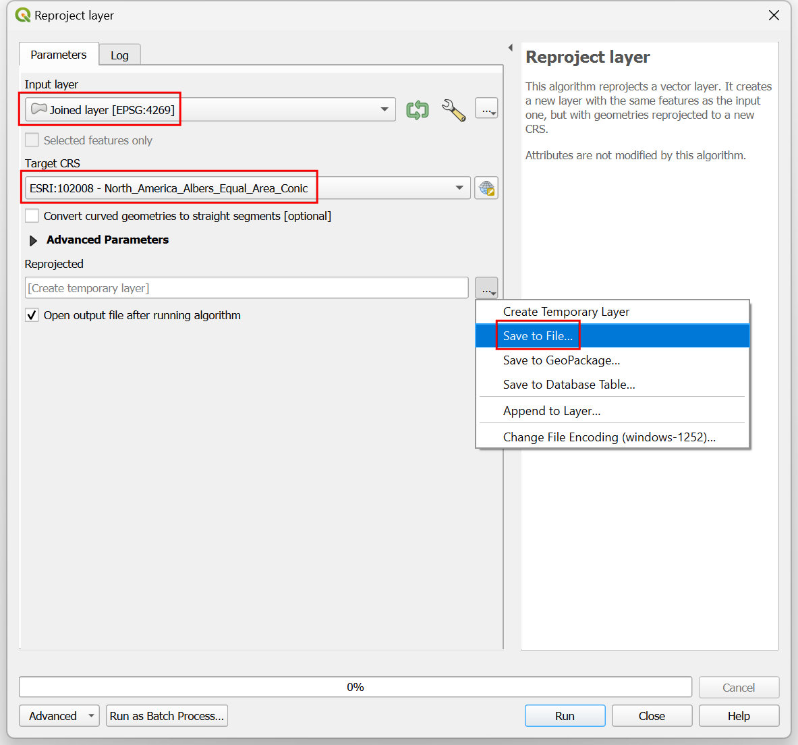
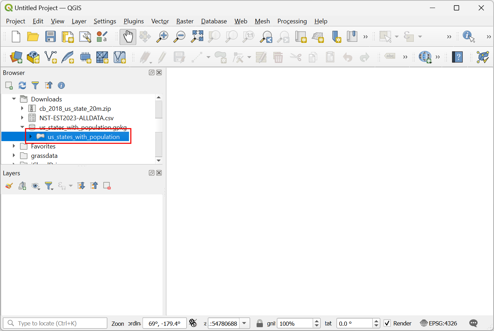
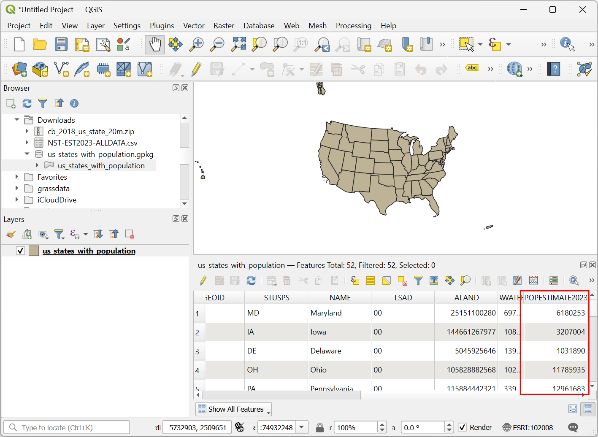
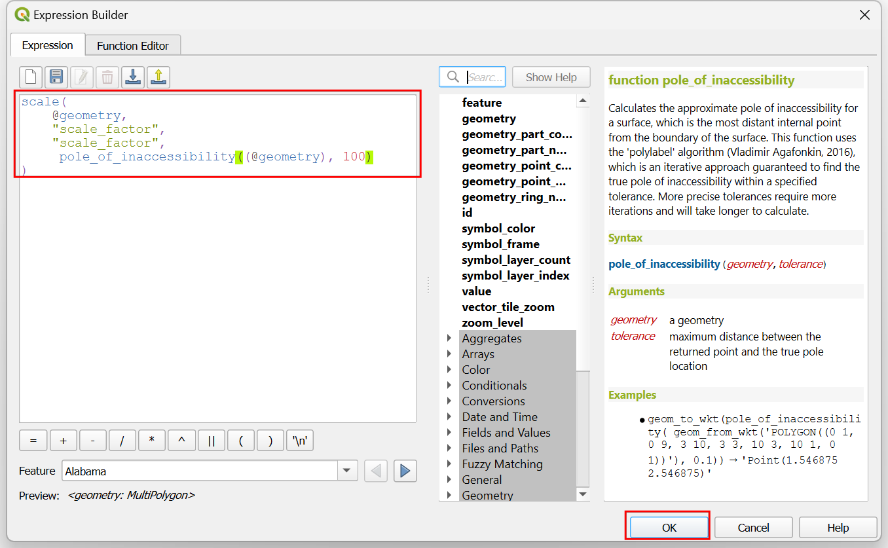

Creación de un cartograma animado (QGIS3)¶
El cartograma es un tipo de visualización cartográfica en el que la forma de cada objeto espacial se distorsiona en proporción a una variable. Los cartogramas facilitan la visualización de grandes variaciones en los datos. El método más sencillo para crear un cartograma es escalar el tamaño de cada región en función de una variable. Este método conserva la forma original del polígono y sólo cambia el tamaño. Estos se conocen como Cartogramas isomórficos no contiguos. En este tutorial aprenderemos a utilizar expresiones de QGIS para crear un cartograma y a utilizar el Controlador Temporal para crear una animación que transforme gradualmente los objetos espaciales hasta el tamaño objetivo.
This tutorial is builds on Hans van der Kwast’s excellent cartogram tutorial. The formula for scale factor used here is from the original paper Noncontiguous Area Cartograms by Judy M Olson.
Visión general de la tarea¶
We will take a layer of states in the US and create an animated cartogram by scaling each state by population. The resulting map will have each state’s area proportional its population.

Obtener los datos¶
La Oficina del Censo de los Estados Unidos proporciona archivos de límites cartográficos junto con conjuntos de datos demográficos. Descargaremos los datos y los procesaremos para crear una capa de datos adecuada para nuestra tarea.
Visite la página de datos Cartographic Boundary Files - Shapefile en el sitio web de la Oficina del Censo de Estados Unidos. Desplácese hacia abajo y descargue el archivo shape de los estados
cb_2018_us_state_20m.zip. Contiene los polígonos estatales que necesitamos para la visualización.

Los polígonos estatales no contienen datos demográficos. Estos datos deben descargarse por separado y unirse al archivo shape para su uso en un SIG. Visite la página Totales de Población Estatal y Componentes de Cambio: 2020-2023 y descargue las Estimaciones Anuales de Población, Componentes Estimados de Cambio de Población Residente y Tasas de los Componentes de Cambio de Población Residente para los Estados Unidos, Estados, Distrito de Columbia y Puerto Rico: April 1, 2020 to July 1, 2023 dataset que se descargará como
NST-EST2023-ALLDATA.csv.

Abra QGIS. Localice el archivo
cb_2018_us_state_20m.zipen el Browser de QGIS y expándalo. Arrastre y suelte la capacb_2018_us_state_20m.shpal lienzo.

Se añadirá una nueva capa
cb_2018_us_state_20mal panel Layers`. A continuación, cargaremos el archivo CSV. Haga clic en el botón Abrir gestor de fuentes de datos.

Cambie a la pestaña Texto delimitado. Haga clic en … junto a Nombre de archivo y busque el archivo descargado
NST-EST2023-ALLDATA.csv. Despliegue la sección Definición de geometría y seleccioneSin geometría (tabla sólo de atributos). Haga clic en Añadir.

A new layer
NST-EST2023-ALLDATAwill be added to the Layers panel. Right-click and select Open Attribute Table. This table has the population counts in thePOPESTIMATE2023column. Each state has a unique id in theSTATEcolumn that we will use to join this table with the polygon layer.

Right-click the
cb_2018_us_state_20mlayer and select Open Attribute Table. The state ids are contained in theGEOIDcolumn. While the numbers are the same, they are formatted as a 2-digit 0-padded number. To match these with theSTATEcolumn from our population table, we need similarly formatted numbers. Select theNST-EST2023-ALLDATA. Go to . Search and locate the algorithm. Double-click to open it.

En el cuadro de diálogo Calculadora de campos, seleccione
NST-EST2023-ALLDATAcomo Capa de entrada`. IntroduzcaGEOIDcomo Nombre de campo` y defina el Tipo de campo de resultado` comoTexto (cadena). A continuación, tomaremos los números del campoSTATEy utilizaremos la funciónlpad()para crear una cadena de 2 dígitos con 0 puntos. Introduzca la siguiente expresión y haga clic en Ejecutar.
lpad("STATE", 2, '0')
Se añadirá una nueva capa
Calculatedal panel Capas. Haga clic con el botón derecho y seleccione Abrir tabla de atributos. Observe que la columna recién creadaGEOIDtiene los identificadores correctamente formateados. Ahora podemos utilizar este campo para unir esta tabla con la capa de estados. Busque y localice el algoritmo . Haga doble clic para abrirlo.

En el cuadro de diálogo Unir atributos por valor de campo, seleccione
cb_2018_us_state_20mcomo Capa de entrada. SeleccioneGEOIDcomo Campo de tabla. Para Capa de entrada 2, seleccione nuestra tablaCalculatedy Campo de tabla 2` seleccioneGEOID. La tabla tiene muchas columnas pero sólo necesitamos la población del último año. Haga clic en el botón … de Campos 2 a copiar` y seleccione sólo el campoPOPESTIMATE2023. Deje las demás opciones predeterminadas y haga clic en Ejecutar.

Se añadirá una nueva capa
Joined layeral panel Capas. Antes de utilizar esta capa para nuestro cartograma, vamos a reproyectarla a un SRC proyectado. Busque y localice el algoritmo . Haga doble clic para abrirlo.

In the Reproject layer dialog, select
Joined layeras the Input layer. For the Target CRS, click the Select CRS button. Search for theNorth_America_Albers_Equal_Area_ConicCRS and select it. This is our final layer so we will save it to disk. Click the … button next to Reprojected and select Save to File….

Introduzca el nombre de la capa como
us_states_with_population.gpkgy seleccione Guardar. Haga clic en Ejecutar para crear el archivo GeoPackage con los datos reproyectados.

Utilizaremos esta capa en la siguiente sección. Para mayor comodidad, puede descargar directamente una copia de la capa anterior desde abajo:
us_states_with_population.gpkg
Fuente de datos [USCENSUS]
Procedimiento¶
Inicie un nuevo proyecto QGIS. Localice el archivo
us_states_with_population.gpkgen la etiqueta Navegador y expándalo. Arrastre y suelte la capaus_states_with_populational lienzo vacío.

A new layer
us_states_with_populationwill be added to the Layers panel. Right-click and select Open Attribute Table. For our cartogram, we need to use the population density as the variable. We will use the population values in thePOPESTIMATE2023field. Close the attribute table.

Search and locate the algorithm from the Processing Toolbox. Double-click to open it.

In the Field calculator dialog, select
us_states_with_populationas the Input layer. Enterdensityas the Field name. Enter the following expression to compute the density. As the functionarea(@geometry)calculates the area in the unit of the CRS (which is in meters), we apply the conversion factor to convert it to square kilometers. Click Run.
1000*1000* "POPESTIMATE2023" / area(@geometry)
Click the … button next to Calculated and select Save to File…. Enter the name of the layer as
us_states_population_density.gpkgand select Save. Click Run.

A new layer
us_states_population_densitywill be added to the Layers panel. Right-click and select Open Attribute Table. We need to pick an Anchor feature against which all other features will be scaled. Ideally you would pick the feature with the highest value of the variable you want to use for the cartogram. This will ensure there are no overlapping areas. Double-click the density column header to sort the table by density. You will notice that the highest density value in our dataset is quite large compared to other values and it belongs to a fairly small state. This will result all the features being scaled to very small sizes. We can pick the feature the second highest density which has a relatively large area and its density is comparable to other features.

In Area cartograms, the scale factor determines how much the feature’s area is reduced. We must reduce each feature’s area so that the population density of the feature is the same as the population density of the anchor feature. The formula for scale factor is the ratio of the square-root of the feature’s value against the square-root of the value of the anchor feature. Open the algorithm from the Processing Toolbox. In the Field calculator dialog, select
us_states_population_densityas the Input layer. Enterscale_factoras the Field name. Enter the following expression to compute the scale factor. The expression calculates the ratio of the square root of the feature’s density against the square root of the density of the second largest density value. Click the … button next to Calculated and select Save to File…. Enter the name of the layer asus_states_scale_factor.gpkgand select Save. Click Run.
sqrt("density")/array_get(array_agg( expression:=sqrt("density"), order_by:=sqrt("density")), -2)
A new layer
us_states_scale_factorwill be added to the Layers panel. Right-click and select Open Attribute Table. Thescale_factorfield now contains the ratio by which each feature must be scaled to have the same population density as the anchor feature.

We only need the
us_states_scale_factorlayer for the final visualization. Select the remaining layers, right-click and select Remove Layer.

Select the
us_states_scale_factorlayer and click the Open the layer styling panel button in the Layers panel. Select Simple Fill and open the drop-down selector for Symbol layer type. Set the Symbol layer type toOutline: Simple Lineand select a Color of your choice. This symbol layer will be a reference for our map when we resize the polygons.

Click the Add Symbol layer (+) button. A new symbol layer Simple Fill will be added. Set the Fill color to the same color as the lines and the Stroke color to be a slightly darker color.

Next, open the drop-down selector for Symbol layer type and select
Geometry Generatoras the Symbol layer type. Geometry generator allows us to modify the geometry for rendering using expressions. Click the Expression Builder button.

We will use the scale() function which resizes the given geometry by X- and Y-scaling factors. For our cartogram, we want to resize each polygon by the ratio of its population to the highest population. Enter the following expression to apply this scaling and click OK.
scale( @geometry, "scale_factor", "scale_factor", centroid(@geometry) )
You will see the state polygons are now sized by the proportion of each state’s population to the highest population. Many large states with low population densities are now much smaller than their original size. You will notice that polygons with irregular shapes are off-center after being scaled. This is because the anchor point of the scaling is the centroid of the geometry which is often the representative point for the polygon. Let’s update our expression to fix this. Click the Expression Builder button.

The scale() function takes an optional parameter to specify the scaling center point. We will use the pole_of_inaccessibility() function to find a representative anchor point for each polygon. This is similar to a centroid, but it is guaranteed to be inside of the polygon whereas a centroid can fall outside for certain shapes. Update the expression as shown below which calculates the pole of inaccessibility of the geometry with a small tolerance value and click OK.
scale( @geometry, "scale_factor", "scale_factor", pole_of_inaccessibility(@geometry, 100) )
Now the scaled polygons will have much better placement. We see another problem. Many features in the layer are Multipolygons, i.e. they have more than one part. Such features have 2 or more polygons that are part of the same geometry. With our current expression, both are scaled with the same anchor point computed from the combined geometry. This is not ideal. For example, a large feature with multiple islands should be scaled such that each island is scaled with its own center point. To fix this, we update our expression to iterate over each part of the geometry and scale it with its own center. Click the Expression Builder button.

Here we use the array_foreach() function to iterate over each part of the geometry and generate the scaled versions of them. Finally collect_geometries() function combines each scaled part into a single multi-polygon geometry. Update the expression as shown below and click OK.
collect_geometries( array_foreach(generate_series(1, @geometry_part_count), scale(geometry_n(@geometry,@element), "scale_factor", "scale_factor", pole_of_inaccessibility(geometry_n(@geometry,@element), 100) ) ) )
The result is much better scaling for multi-part features.

Our cartogram is ready. This map shows concentration of the population on the eastern half of the US and a striking absence of population in states west of the Mississippi river.

We can make an improved visualization by creating an animation that slowly transforms the original rendering to the final size. Click the Temporal Control Panel button with the Clock icon in the Map Navigation Toolbar. Select the Animated temporal navigation button.

The default Animation range will be populated with a 24-hour window in the increment of 1-hour. This is fine for our use case as we will get 24-frames of animation. You can adjust this if you want a slower/faster animation. Right-click the
us_states_with_populationlayer and select Properties.

Select Temporal tab and enable the Dynamic Temporal Control. This layer will be updated using expression so we don’t need to configure it here. Just select
Redraw Layer Onlyso that the layer is refreshed after each time step and rendered with the updated values from the expression.

Let’s update our Geometry Generator expression to use the animation time steps and gradually scale the geometry. Click the Open the layer styling panel button in the Layers panel. Select Geometry Generator followed by the Expression Builder button.

Here we want to start with a scale factor of 1 and end up with the final scale factor value for the feature in the field
scale_factor. We use the scale_linear() function which takes the time of the current time-step and calculates the scale factor using the start and end times. Update the expression as shown below and click OK.
collect_geometries( array_foreach(generate_series(1, @geometry_part_count), scale(geometry_n(@geometry,@element), scale_linear( epoch(@map_start_time), epoch(@animation_start_time), epoch(@animation_end_time), 1, "scale_factor"), scale_linear( epoch(@map_start_time), epoch(@animation_start_time), epoch(@animation_end_time), 1, "scale_factor"), pole_of_inaccessibility(geometry_n(@geometry,@element), 100) ) ) )
Back in the Temporal Controller panel, click the Play button to see the animation. You should see the shape of each polygon gradually scaled after each frame.

Once you are happy with the configuration, we can export the animation. Click the Export Animation button.

In the Export Map Animation dialog, click … next to Output directory and browse to any folder on your computer. Keep all the other options to their default value and click Save.

The individual frames of the animation will be exported as images. We can create a video or animated GIF from these frames. I recommend using the website ezgif.com which allows you to create GIFs from individual images easily. Visit Ezgif Animated GIF Maker. Browse to the exported animation frames and click Upload files!.

Configure the GIF options by setting the Delay time to
5. Check crossfade frames effect and set the Fader delay and Fader count to2. Click Make a GIF!/

Click the save button to download the animation as a GIF file.


If you want to give feedback or share your experience with this tutorial, please comment below. (requires GitHub account)